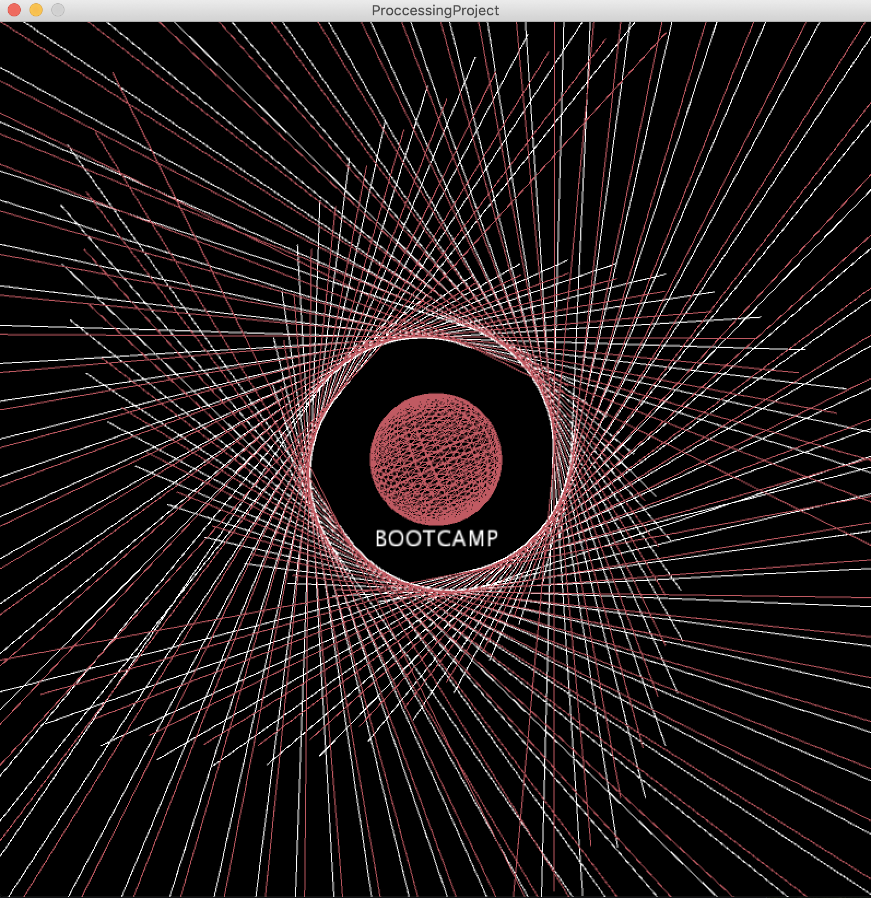
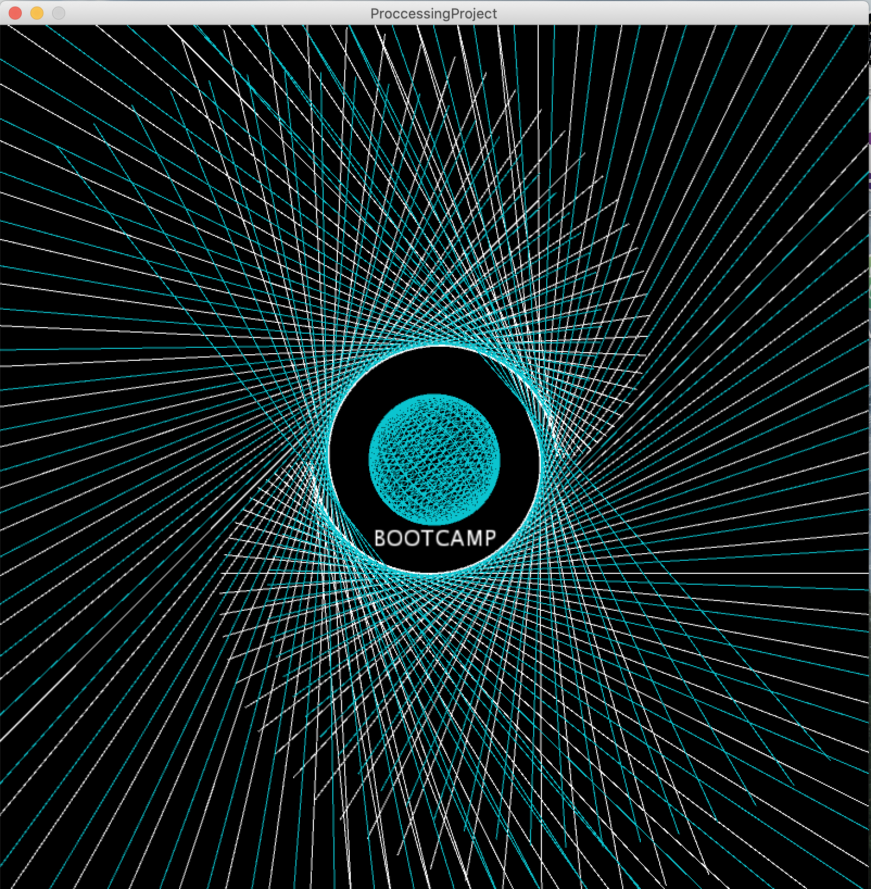
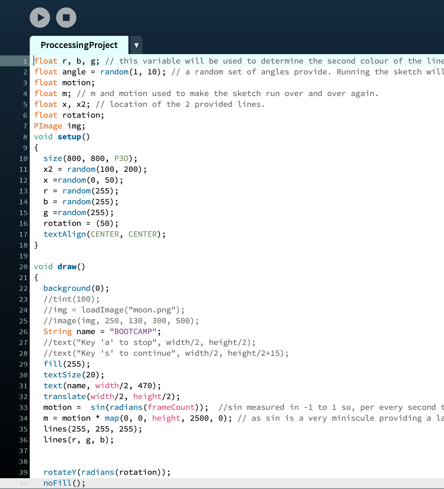

Fred Luch Josh AlcantaraHi, I'm Fred. I am a creative, friendly, hardworking individual who has an immense passion for robotics and design. In 2017 I was a part of a club called VEX Robotics where I lead younger students to build and design robots that can win competitions among other institutions. Now, attending City, University of London, I wish to bring my passion into new heights and develop my skills and knowledge to become an efficient programmer for the wider society. With only three to four months of experience in programming, I still have plenty to learn. |
||
|
|
||
Bootcamp 2020: Lines of ArtMy first programming project, concluding the 2-week Programming Bootcamp at City (2020). In this processing project, I have demonstrated a great understanding of uses of if statement, loops, randomness, variables and methods. I have produced a random geometric spiral generator which provides a different output every time the sketch is run, also, it provides an animation of the lines connecting and disbanding. Using a variety of variables allowed me to store different types of values within the sketch such as floats, integers, images, etc. Learning and applying variables within my project was crucial as it made me become an efficient programmer by not repeating and manually placing an input to a function. Furthermore, the use of loop allowed me to create 300 lines in the sketch without the need of repeating the same lines of code 300 times. Finally, with the combination of sin, radian and framecount, I was able to produce an endless animated geometric spiral that connects and disperse for some time. Check out the code on Github: https://github.com/FredAlcantara/adbt138 | ||
|    | ||